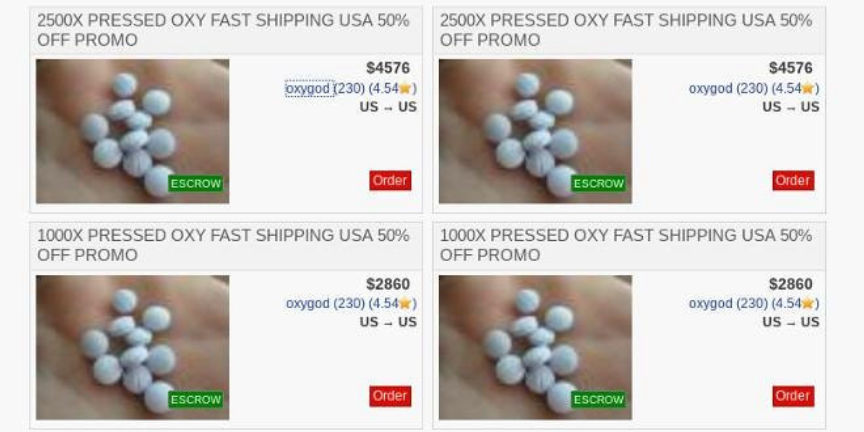
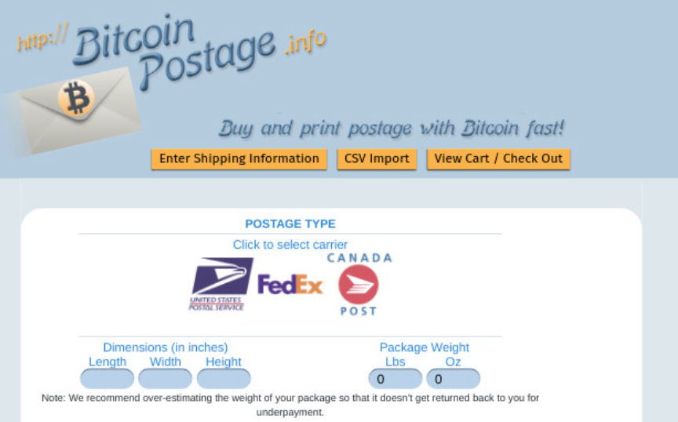
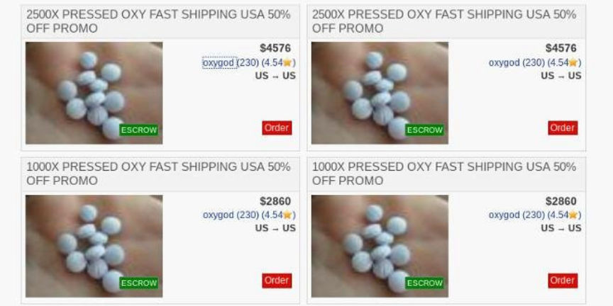
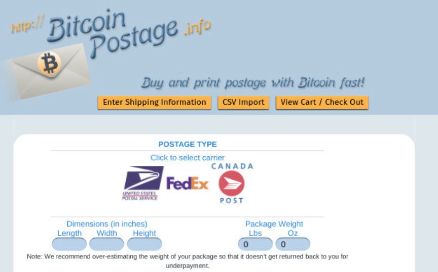

Counterfeit Oxycodone Vendor "OxyGod" Sentenced to 17 Years in Prison
~4 min read | Published on 2019-08-26, tagged Counterfeits, Darkweb-Vendor, Drugs, Sentenced using 995 words.
A 22-year-old Santa Ana man was sentenced to more than 17 years in federal prison for selling counterfeit oxycodone pills on the darkweb under the username “OxyGod” as well as money laundering and being a felon in possession of a firearm. The defendant and two co-conspirators ran a massive drug distribution operation out of an apartment in Newport Beach, California, prosecutors said.
The defendant, Wyatt Pasek, led the operation with assistance from two co-conspirators–Duc Cao, 22, of Orange, and Isaiah Suarez, 23, of Newport Beach. Cao and Suarez were sentenced to 87 months and 37 months in prison, respectively, earlier this year. All three defendants landed in custody as the result of a six-month investigation by federal and state law enforcement agencies.
The list of federal agencies involved in the investigation included all of the usual agencies as well as some less frequently seen investigative agencies:
The Drug Enforcement Administration; Homeland Security Investigations; IRS Criminal Investigation; the United States Postal Inspection Service; the Food and Drug Administration’s Office of Criminal Investigations; the Federal Bureau of Investigation; and the United States Marshals Service.
An FBI confidential informant, in 2017, gave the FBI information on two drug dealers in California involved in the counterfeit oxycodone and Xanax market. The FBI relayed this information to DEA Special Agent Lindsey Bellomy. The informant had contacted Pasek and received a sample of “home-pressed” counterfeit oxycodone pills with the “A215” stamp. Pasek told the CI that he had a stash of at least 100,000 similar pills.
Law enforcement surveilled Pasek, his co-conspirators, and their properties. Investigators had placed GPS trackers on Pasek’s Ferrari and his Toyota 4-Runner. They had warrants authorizing a pen register for Pasek’s home I.P. address and a warrant for subscriber and GPS data from his cell phone carrier. They had warrants for dozens of packages seized by Postal Inspectors. And during the final stages of the operation, law enforcement had warrants for Pasek’s apartments, his co-conspirators’ houses, and Pasek’s mother’s house.
Pasek, at one point, showed up at one of the locations in a Lamborghini law enforcement had not recognized. In order to confirm the identity of the driver, a law enforcement officer conducted a traffic stop and a different law enforcement officer called the phone number previously identified as Pasek’s number.
CMPD Sergeant Selinske conducted a traffic stop on that vehicle and confirmed the driver to be PASEK. During the stop, Detective Fricke called PASEK’s cellular telephone. (That telephone number had been previously identified through a toll analysis of the telephone of the individual who provided CS-1 the blue, A-215 pills on September 11, 2017, which showed that his call to the supplier of the blue, A-215 pills, “Wyatt,” in CS-1’s presence had, in fact, been made to PASEK.) Detective Hermes observed PASEK answer his cell phone, holding it to his ear for approximately twenty seconds.
Investigators received information from the property manager at Essex Skyline Apartments where Pasek had been living throughout the investigation. Pasek’s rent was more than $5,000 and the proof of income statements indicated that Pasek earned $9,250.00 every two weeks. United States Marshals Service SA James Sangirardi informed DEA SA Bellomy that there were no documents backing up Pasek’s income statements. And since Pasek was under constant surveillance, law enforcement knew Pasek had no regular source of income.
Law enforcement watched Pasek, Suarez, and Cao travel to and from their residences, the apartment used as a base of operations, and Post Offices. The police spotted Cao dropping off packages at a USPS Drop Box on March 5,2018. Information collected after the very first drop led to a fairly precise profile.
Shape and size:
The parcels all were the same size and shape with the same sender listed on each respective parcel. Detective Hermes took the parcels into custody and then subsequently gave them to USPI Boyd.
Incorrect zip codes:
Additionally, USPI Boyd found that the parcels were mailed from a postal facility other than the zip code of the sender’s residence.
Fake names:
USPI Boyd could not find anyone with the name listed on the parcel associated with the address listed for the sender on the parcels.
And Easypost:
Furthermore, the sender used the USPS “easypost” system to generate labels for the parcels. […] USPI Boyd informed me that he learned from the numerous investigations that he has conducted over the course of the last few years that drug traffickers are now regularly using “easypost” in yet another effort to further disguise themselves as being associated with their parcels

While some branches of law enforcement were conducting physical surveillance, the Food and Drud Administration’s Office of Criminal Investigation was ordering packages of counterfeit oxycodone from the Dream vendor “OxyGod.” FDA-OCI agents placed several orders. One example:
On March 02, 2018, acting in an undercover capacity on the Dream Market, agents from FDA-OCI purchased another one hundred (100) pills of “PRESSED OXY” purported to be pressed with .8mg of fentanyl from a vendor utilizing the moniker “oxygod” on the marketplace. The product was purchased in exchange for $530 USD of cryptocurrency. A review of photos associated with this product show multiple round pills, blue in color, appearing to bear the pill inscription “A 215.”
The FDA-OCI provided the DEA with information about the packages and the drugs the packages contained. The packages had labels purchased through Easypost (specifically through Bitcoinpostage.info). DEA SA Bellomy wrote in the criminal complaint that law enforcement in California had intercepted the “March 02 package” that the FDA-OCI agents had ordered.
On March 29, law enforcement arrested Pasek, Suarez, and Cao.
Pasek pleaded guilty to participating in a narcotics-trafficking conspiracy, being a convicted felon in possession of a firearm, and money laundering. Suarez pleaded guilty to a single count of distribution of controlled substances. Cao also pleaded guilty to a single count of conspiracy to distribute a controlled substance. They were sentenced to 210 months, 87 months and 37 months in prison, respectively.
Archived Press Release
The defendant, Wyatt Pasek, led the operation with assistance from two co-conspirators–Duc Cao, 22, of Orange, and Isaiah Suarez, 23, of Newport Beach. Cao and Suarez were sentenced to 87 months and 37 months in prison, respectively, earlier this year. All three defendants landed in custody as the result of a six-month investigation by federal and state law enforcement agencies.
Wyatt Pasek poses with cash and a rental supercar
The list of federal agencies involved in the investigation included all of the usual agencies as well as some less frequently seen investigative agencies:
The Drug Enforcement Administration; Homeland Security Investigations; IRS Criminal Investigation; the United States Postal Inspection Service; the Food and Drug Administration’s Office of Criminal Investigations; the Federal Bureau of Investigation; and the United States Marshals Service.
An FBI confidential informant, in 2017, gave the FBI information on two drug dealers in California involved in the counterfeit oxycodone and Xanax market. The FBI relayed this information to DEA Special Agent Lindsey Bellomy. The informant had contacted Pasek and received a sample of “home-pressed” counterfeit oxycodone pills with the “A215” stamp. Pasek told the CI that he had a stash of at least 100,000 similar pills.
Listings for counterfeit oxycodone on Dream Market
Law enforcement surveilled Pasek, his co-conspirators, and their properties. Investigators had placed GPS trackers on Pasek’s Ferrari and his Toyota 4-Runner. They had warrants authorizing a pen register for Pasek’s home I.P. address and a warrant for subscriber and GPS data from his cell phone carrier. They had warrants for dozens of packages seized by Postal Inspectors. And during the final stages of the operation, law enforcement had warrants for Pasek’s apartments, his co-conspirators’ houses, and Pasek’s mother’s house.
Wyatt Pasek poses with cash and a rental yet again
Pasek, at one point, showed up at one of the locations in a Lamborghini law enforcement had not recognized. In order to confirm the identity of the driver, a law enforcement officer conducted a traffic stop and a different law enforcement officer called the phone number previously identified as Pasek’s number.
CMPD Sergeant Selinske conducted a traffic stop on that vehicle and confirmed the driver to be PASEK. During the stop, Detective Fricke called PASEK’s cellular telephone. (That telephone number had been previously identified through a toll analysis of the telephone of the individual who provided CS-1 the blue, A-215 pills on September 11, 2017, which showed that his call to the supplier of the blue, A-215 pills, “Wyatt,” in CS-1’s presence had, in fact, been made to PASEK.) Detective Hermes observed PASEK answer his cell phone, holding it to his ear for approximately twenty seconds.
Investigators received information from the property manager at Essex Skyline Apartments where Pasek had been living throughout the investigation. Pasek’s rent was more than $5,000 and the proof of income statements indicated that Pasek earned $9,250.00 every two weeks. United States Marshals Service SA James Sangirardi informed DEA SA Bellomy that there were no documents backing up Pasek’s income statements. And since Pasek was under constant surveillance, law enforcement knew Pasek had no regular source of income.
Counterfeit Oxycodone Pills
Law enforcement watched Pasek, Suarez, and Cao travel to and from their residences, the apartment used as a base of operations, and Post Offices. The police spotted Cao dropping off packages at a USPS Drop Box on March 5,2018. Information collected after the very first drop led to a fairly precise profile.
Shape and size:
The parcels all were the same size and shape with the same sender listed on each respective parcel. Detective Hermes took the parcels into custody and then subsequently gave them to USPI Boyd.
Incorrect zip codes:
Additionally, USPI Boyd found that the parcels were mailed from a postal facility other than the zip code of the sender’s residence.
Fake names:
USPI Boyd could not find anyone with the name listed on the parcel associated with the address listed for the sender on the parcels.
And Easypost:
Furthermore, the sender used the USPS “easypost” system to generate labels for the parcels. […] USPI Boyd informed me that he learned from the numerous investigations that he has conducted over the course of the last few years that drug traffickers are now regularly using “easypost” in yet another effort to further disguise themselves as being associated with their parcels

Bitcoinpostage.info
While some branches of law enforcement were conducting physical surveillance, the Food and Drud Administration’s Office of Criminal Investigation was ordering packages of counterfeit oxycodone from the Dream vendor “OxyGod.” FDA-OCI agents placed several orders. One example:
On March 02, 2018, acting in an undercover capacity on the Dream Market, agents from FDA-OCI purchased another one hundred (100) pills of “PRESSED OXY” purported to be pressed with .8mg of fentanyl from a vendor utilizing the moniker “oxygod” on the marketplace. The product was purchased in exchange for $530 USD of cryptocurrency. A review of photos associated with this product show multiple round pills, blue in color, appearing to bear the pill inscription “A 215.”
The FDA-OCI provided the DEA with information about the packages and the drugs the packages contained. The packages had labels purchased through Easypost (specifically through Bitcoinpostage.info). DEA SA Bellomy wrote in the criminal complaint that law enforcement in California had intercepted the “March 02 package” that the FDA-OCI agents had ordered.
On March 29, law enforcement arrested Pasek, Suarez, and Cao.
Pasek pleaded guilty to participating in a narcotics-trafficking conspiracy, being a convicted felon in possession of a firearm, and money laundering. Suarez pleaded guilty to a single count of distribution of controlled substances. Cao also pleaded guilty to a single count of conspiracy to distribute a controlled substance. They were sentenced to 210 months, 87 months and 37 months in prison, respectively.
Archived Press Release